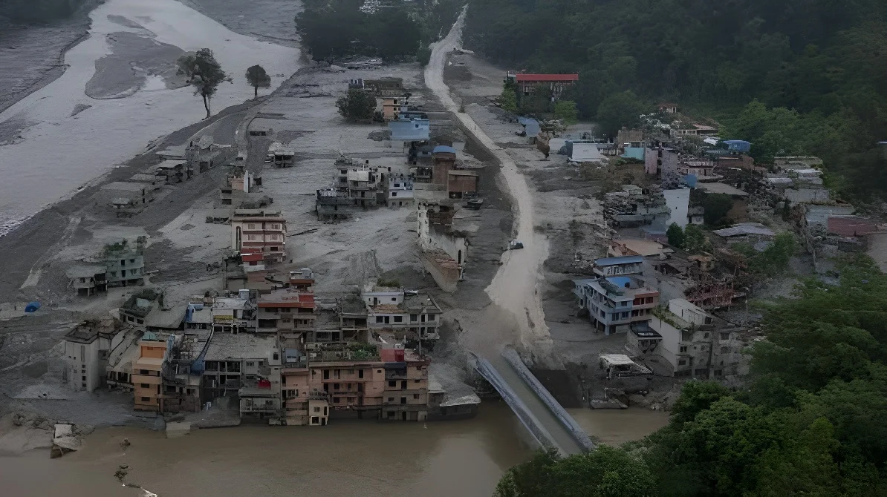

Du 25 au 27 septembre 2026, les restes d'une dépression venue du golfe du Bengale ont déversé sur l'Uttar Pradesh, l'État le plus peuplé de l'Inde, plus de huit fois les pluies normales de la période. Le bilan officiel atteignait 81 morts le 28 septembre. Au Népal voisin, déjà meurtri par la crue glaciaire d'août, les autorités comptaient 27 morts et 4 disparus pour les journées du 24 au 27 septembre, après des centaines de glissements de terrain.
Entre le vendredi 25 et le dimanche 27 septembre au matin, l'Uttar Pradesh a reçu en moyenne 66,5 millimètres de pluie, contre 7,6 millimètres en temps normal pour la période, soit 775 % de plus que la normale selon le bureau du commissaire aux secours de l'État. Cinquante-six des 75 districts ont connu des précipitations très excédentaires. À Kaimganj, dans le district de Farrukhabad, l'Institut météorologique indien (IMD) a relevé jusqu'à 32 centimètres de pluie ; le district a enregistré, au total, un excédent de 7 385 % par rapport à la normale.
Le bilan s'est alourdi d'un communiqué à l'autre : 56 morts et 46 blessés le 27 septembre, puis 81 morts, 62 blessés et 2 254 maisons endommagées dans le décompte du 28 septembre. Les victimes sont mortes noyées, ensevelies par des coulées de boue, sous des murs ou des arbres effondrés, ou électrocutées. Le département des secours dénombrait aussi 154 animaux morts, et l'agence Associated Press fait état de plus de 2 000 hectares de cultures détruits.
| District | Morts |
|---|---|
| Sitapur | 7 |
| Lakhimpur Kheri | 5 |
| Bahraich | 5 |
| Balrampur | 5 |
| Ayodhya, Maharajganj, Gorakhpur | 4 chacun |
Le 27 septembre, la Ghaghara et la Rapti dépassaient leur cote d'alerte en Uttar Pradesh : à Elgin Bridge, dans le district de Barabanki, la Ghaghara atteignait 106,14 mètres à 8 heures, contre un seuil de 106,07 mètres, avec une crue encore annoncée en hausse. Plusieurs autres cours d'eau indiens, parmi lesquels le Gange, la Gandak, la Kosi, la Bagmati et la Narmada, étaient eux aussi au-dessus de leur niveau de danger, selon Al Jazeera.
Les dégâts touchent aussi les infrastructures : une portion d'environ 200 mètres de l'autoroute Kanpur-Etawah a été endommagée, des ponts et des ponceaux ont cédé, et des routes et villages sont restés coupés par les eaux. Dans l'Uttarakhand voisin, plus de 80 routes étaient bloquées et 179 randonneurs, dont six étrangers, restaient bloqués en altitude, des évacuations par hélicoptère étant prévues à partir du lundi 28 septembre.
L'IMD annonce l'intensification d'une dépression sur l'ouest du golfe du Bengale, avec de fortes pluies attendues sur l'Odisha, l'Andhra Pradesh, le Chhattisgarh et le Telangana.
Au Népal, début d'une série de 542 incidents liés aux pluies (jusqu'au 27) ; le département du Tourisme demande de suspendre treks et ascensions du 25 au 27.
Début des pluies extrêmes en Uttar Pradesh, qui dureront jusqu'au 27 au matin.
En Odisha, plus de 70 000 personnes sont évacuées vers 395 camps de secours ; le barrage de Hirakud ouvre 16 vannes.
L'Uttar Pradesh compte 56 morts ; au Népal, l'agence de presse ANI en dénombre au moins 21. Une avalanche frappe le camp de base de l'Himlung Himal, dans le district de Manang.
Le bilan de l'Uttar Pradesh monte à 81 morts, 62 blessés et 2 254 maisons endommagées.
L'autorité népalaise de gestion des catastrophes (NDRRMA) publie son décompte du 24 au 27 septembre : 27 morts et 4 disparus.
Selon la NDRRMA, 542 incidents ont été recensés au Népal entre le 24 et le 27 septembre : 304 glissements de terrain (20 morts et 7 blessés), 87 inondations (4 morts) et 151 autres événements liés aux pluies (3 morts). Au total, 27 personnes sont mortes et 4 sont portées disparues ; 227 maisons ont été détruites, 142 endommagées et 31 ponts touchés. Plus de 100 millimètres de pluie ont été relevés dans 186 stations, avec un maximum de 544 millimètres à Dedhgaun (Nawalparasi Est), devant Panchase, dans le Kaski (500 millimètres).
Le décompte a évolué en quelques jours : 12 morts et 7 disparus annoncés le dimanche 27 septembre par la porte-parole de l'autorité, puis au moins 21 morts et 5 disparus selon l'agence ANI, enfin 27 morts et 4 disparus dans le bilan consolidé publié le 29 septembre. Les districts de Rasuwa, Nuwakot, Manang, Mustang, Myagdi et Baglung figuraient parmi les zones touchées, et Al Jazeera rapporte que 49 des 77 districts du pays étaient placés sous alerte de crues soudaines.
« Depuis jeudi, 12 personnes sont mortes dans des catastrophes liées aux pluies, comme des inondations et des glissements de terrain. »
— Shanti Mahat, porte-parole de l'autorité népalaise de gestion des catastrophes, 27 septembre 2026 (traduction)En Uttar Pradesh, les autorités ont ordonné une assistance immédiate aux sinistrés, l'évaluation des pertes agricoles et le relogement des familles déplacées ; un numéro d'urgence, le 1070, a été mis en place et des écoles ont été fermées dans plusieurs districts touchés. L'évaluation des pertes de récoltes se poursuivait le 28 septembre, selon le commissaire aux secours Hrishikesh Bhaskar Yashod. En Odisha, où 13 districts ont subi des crues soudaines ou des inondations, 33 équipes de la force d'intervention de l'État (ODRAF), trois équipes de la Force nationale d'intervention en cas de catastrophe (NDRF) et environ 300 équipes de pompiers ont été déployées.
Au Népal, la NDRRMA affirme avoir surveillé la situation en continu pendant 76 heures, envoyé des SMS d'alerte à plus de 980 000 personnes et déplacé environ 2 000 habitants de zones à risque ; les forces de sécurité ont mené des sauvetages par hélicoptère dans les districts de Myagdi et de Jajarkot, entre autres. Une avalanche au camp de base de l'Himlung Himal, le 27 septembre, a de son côté fait au moins quatre morts, et douze employés d'expéditions restaient portés disparus à la fin du mois, les recherches ayant été suspendues par le mauvais temps (bilan encore évolutif selon les sources).
Au Népal, ces pluies surviennent un peu plus d'un mois après la crue glaciaire du 26 août, décrite dans notre analyse de la catastrophe glaciaire à la frontière tibétaine. Le bilan de cette catastrophe, annoncé comme provisoire dans cet article, dépasse désormais 1 400 morts selon l'autorité népalaise et la presse internationale, avec plus de 5 000 disparus : des pentes et des vallées déjà fragilisées ont reçu de nouvelles pluies, ce qui multiplie les glissements.
Pour l'agence Reuters, les scientifiques relient la multiplication des événements météorologiques extrêmes à la hausse des températures et au dérèglement climatique. Physiquement, un air plus chaud contient davantage de vapeur d'eau et peut donc libérer des pluies plus intenses. Ces épisodes posent la question de la prévention (alertes, aménagement du territoire, entretien des digues) dans des régions très peuplées, où une pluie exceptionnelle touche des millions de personnes.